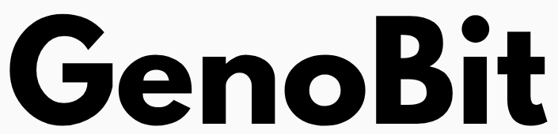
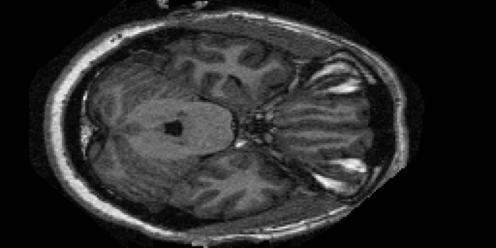
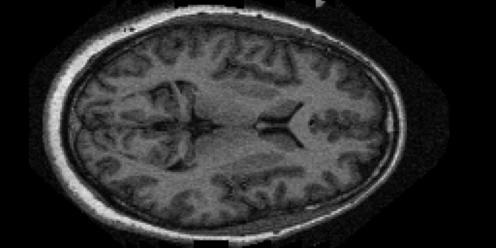
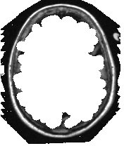
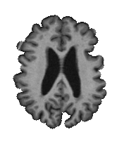
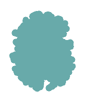
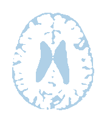
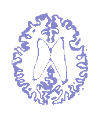

GenoBit · Proyecto
Neuroimaging
Antes de empezar
Ronda de presentaciones
El grupo
¿Qué es GenoBit?
Geno de genómica + Bit de computación.

Identidad de marca
Comunidad fundada
Plan de trabajo
Área de investigación
Nuestros proyectos
Neuroimaging
Biomarkers
AlphaBit
miRNAseq pipeline
Neuroimaging
Antes de los datos
Imágenes del cerebro
Una resonancia es un volumen 3D, tomado corte por corte.
Cada cubito del volumen es un vóxel.
Cada pixel es un número: 0 negro, 255 blanco.
En el dataset: 1 archivo = 1 corte.

Contexto
¿Qué es la demencia?

SanoMismo nivel del cerebro, distintas personas. Los huecos oscuros crecen.
Cómo se trabaja
Metodología
Semestre pasado
ADNI · 3 clases · restringido
Este semestre
OASIS-1 · Kaggle · 86,437 JPG · abierto
kagglehub.dataset_download("ninadaithal/imagesoasis")Limpieza y estandarización
Selección de cortes
Accuracy · azar = 0.33
Lo que se usó
Accuracy
Matriz de confusión
La base de datos
OASIS
Open Access Series of Imaging Studies
OASIS-1 · transversal · la que usamos
La familia OASIS
Kaggle · ninadaithal/imagesoasis
Así viene el dataset
Etiqueta = carpeta. Lo demás = nombre del archivo.
61 cortes por escaneo (100–160).
Etiquetas
Imágenes vs. personas
contando imágenes
1 punto = 1 persona
Lo que ve la red
Un escaneo por clase
Tabla clínica de OASIS
¿Quiénes son estas personas?
147 de 266 “Non Demented” nunca fueron evaluados: son jóvenes.
La edad casi separa las clases sola.
Lo que propuso el semestre pasado
Técnicas de preprocesamiento
Bias field correction
Empareja el brillo del escáner.
arrastra la línea

Skull stripping
Deja solo el cerebro.
- Cabeza completa
- Se selecciona el cerebro
- Se quita lo demás



FreeSurfer
Etiqueta cada punto del cerebro.



Entropía de Shannon
Cuánta información trae cada corte.
arrastra sobre la curvaSlice ranking
Califica los 61 cortes y se queda con los mejores.
- 61 cortes en orden
- Calificación
- Se ordenan
- Top 10
Una pregunta incómoda
¿Y el profesor?
SE BUSCA
Siendo honestos
Limitaciones
Del trabajo anterior
De los datos (dataset completo)
Para pensar juntos
Posibles preguntas
¿Preguntas?
Notebook, datos y esta presentación:
github.com/Mmateo101/presentation-neuroimaging